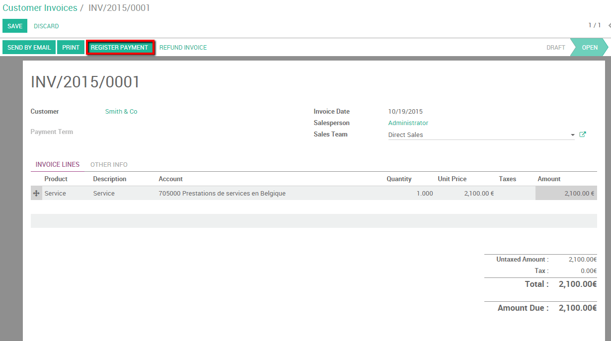

Overview
Linking your bank statements with your accounting can be a lot of work. You need to find invoices back, relate payments and that amount of administration can cast a lot of time. Luckily, with Odoo you can very easily link your invoices or any other payment with your bank statements.
Two reconciliation processes exist in Odoo.
- We can directly register a payment on the invoices
- We can reconcile open invoices with bank statements
Configuration
No special configuration is necessary to register invoices. All we need to do is install the accounting app.

Use cases
Case 1: Payments registration
We received the payment proof for our invoice of 2100 euros issued to Smith & Co.
We start at our issued Invoice of 2100 euros for Smith & Co. Because the sold product is a service we demand an immediate payment. Our accountant only handles the bank statements at the end of week, so we have to mark the invoice as paid so we can remember we can start the service with our customer.
Our customer send us a payment confirmation. We can thus register a payment and mark the invoice as paid.
By clicking on register payment, we are telling Odoo that our customer paid the Invoice. We thus have to specify the amount and the payment method

We can always find the payment back from the Invoice by clicking on the .

The invoice has been paid and the reconciliation has been done automatically.
Case 2: Bank statements reconciliations
We start at our issued Invoice of 3000 euros for Smith & Co. Let's also assume that other Invoices are open for different customers.
We receive our bank statement and not only the invoice of Smith & Co has been paid, the one of Buzz of 92 euros as well.
Import or Create the bank statements. Please refer to the documents from the Bank Feeds section.

On the dashboard, click on Reconcile # Items

If everything was right (correct partner name, right amount) odoo will do the reconciliations automatically.

If some issues are found, you will need to take manual actions.
For example, if the partner is missing from your bank statement, just fill it in :

If the payment is done with a down payment, just check if it is all right and validate all related payments :

Tip
Hit CTRL-Enter to reconcile all the balanced items in the sheet.